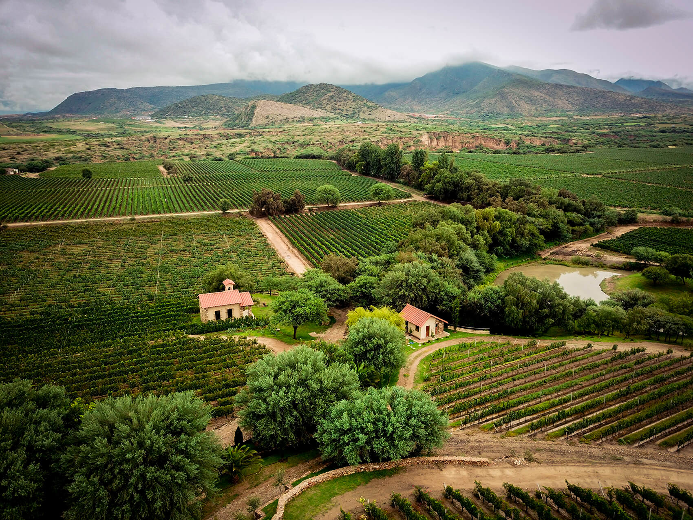
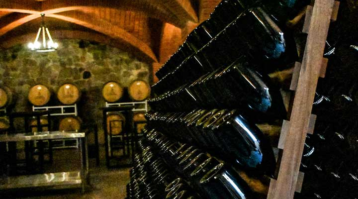
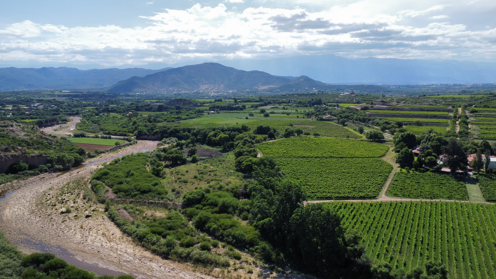

Ruta del Vino y El Valle de la Concepción
📍 Tarija, Bolivia
⏱️ Duración: 1 Día
👥 Tipo de servicio: Compartido / Privado
🏷️ Desde: $USD 80



Descripción del Tour
Recorrido por bodegas de vinos de gran altura, catas dirigidas y el ambiente hospitalario del sur boliviano.
Itinerario Detallado
Día 1: Valle de la Concepción y Bodegas
Visita guiada a viñedos, degustación de vinos y singanis de altura, y almuerzo tradicional en la región.
✅ El paquete incluye:
- Transporte turístico
- Guía especializado en enología
- Catas y degustación de vinos
❌ No incluye:
- Almuerzo y compras personales